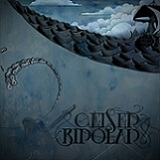
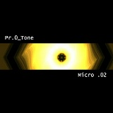

Os presentamos a continuación una breve colección de críticas rápidas de una serie de discos de grupos que quieren darse a conocer con sus debuts o EPs en el panorama musical actual. Desde SuicideByStar nos decidimos a dar un pequeño empujoncito a todos estos discos y animamos al lector a darles una oportunidad a cada uno de ellos. La mayoría de estos grupos ofrece descarga gratuita a través de sus bandcamps. Que los disfrutéis.
Town Portal – Vacuum Horror
Town Portal es un cuarteto proveniente de Dinamarca que realiza un rock instrumental de amplios horizontes. Temas como Rosini desvelan su querencia por los desarrollos progresivos, confirmando que sus puntos fuertes son la fluidez de sus dinámicas y la naturalidad de los cambios de ritmo. Por otro lado también se acercan a terrenos math con intrincados juegos de sus dos guitarras y compases caprichosos ejecutados con gran elegancia por su técnico baterista. Mientras que en temas como Steaming Rolls le sacan partido a sonidos limpios en las guitarras, el grupo se torna presto hacia la contundencia metálica en temas como Drastic Insight, con claro regusto a stoner, aunque con la atenuante de echarse en falta algún highlight con más garra. En su bandcamp, tenemos el disco integro para su escucha: http://townportal.bandcamp.com/ (remem0rama)
{kind=link}
Maria Magdalena + Milkilo – Antilustre SPLIT
 Para aquellos que busquen experimentación en sonidos alternativos, tenemos el Split Antilustre de Maria Magdalena y Milkilo, ambas bandas francesas. Debo alertar de la existencia de un cóctel compuesto por una miríada de estilos, que como es de esperar, puede resultar bastante inestable incluso para un Split. Maria Magdalena es un trío de sonido versátil, definidos por un metal progresivo y técnico que tan pronto es colorista como oscuro, capaces hacer una versión kraut/punk de Joy Division, y pasar desde el sonido jam a la brutalidad en Olympe. Milkilo es un crisol de metal abigarrado, conformado por un dúo de drum & bass que se lanza a experimentar con otros tiempos e instrumentos (guitarras, teclados) y que también nos deja una robustecida versión del clásico In the Hall of Mountain King del compositor Edvard Grieg. Podemos escuchar el disco entero en el siguiente enlace: http://voxproject.bandcamp.com/album/antilustre-split (remem0rama)
Para aquellos que busquen experimentación en sonidos alternativos, tenemos el Split Antilustre de Maria Magdalena y Milkilo, ambas bandas francesas. Debo alertar de la existencia de un cóctel compuesto por una miríada de estilos, que como es de esperar, puede resultar bastante inestable incluso para un Split. Maria Magdalena es un trío de sonido versátil, definidos por un metal progresivo y técnico que tan pronto es colorista como oscuro, capaces hacer una versión kraut/punk de Joy Division, y pasar desde el sonido jam a la brutalidad en Olympe. Milkilo es un crisol de metal abigarrado, conformado por un dúo de drum & bass que se lanza a experimentar con otros tiempos e instrumentos (guitarras, teclados) y que también nos deja una robustecida versión del clásico In the Hall of Mountain King del compositor Edvard Grieg. Podemos escuchar el disco entero en el siguiente enlace: http://voxproject.bandcamp.com/album/antilustre-split (remem0rama)
Geiser – Bipolar
 Geiser son un quinteto holandés de metal psicodélico que están intentando abrirse poco a poco un hueco en el mundo del metal. Tras pasar varios meses tocando en salas de su país y tocar como teloneros de A Place to Bury Strangers sacan a la venta su EP debut Bipolar. Caracterizados sobre todo por los poderosos riffs de corte Sludge/Stoner que golpean desde el primer segundo de disco y por el uso de efectos vocales como ecos que añaden un toque más místico a su sonido. Influidos también por el doom y el post-metal, durante estos treinta minutos que dura el EP construyen una agobiante muralla de sonido que, como ellos dicen, no es recomendable para los más débiles de corazón. Quizás haciendo gala de la bipolaridad que afirman en el título del disco en algunos pasajes se relajan llevándonos por fragmentos más ambientales y que por lo general se basan en la repetición de estructuras hasta conseguir un efecto hipnótico. La voz ronca cantando siempre de forma alterada transmite una angustia que acompaña perfectamente a la furiosa instrumentación. Un debut más que sólido e ideales para todo fan de los subgéneros más lentos y pesados del metal, especialmente para seguidores de Neurosis, Oxbow o Pelican. De nuevo, el disco se encuentra disponible en su bandcamp: http://geiser.bandcamp.com/album/bipolar (S—-G)
{kind=link}
Paroxetina – Paroxetina
Paroxetina son un trío de rock instrumental originario de Santiago de Chile que lanzó el año pasado su debut homónimo y enteramente auto producido. Su sonido, sin presencia vocal, es básicamente post rock mezclado con math rock. Las únicas voces que oiremos serán los fragmentos de grabaciones que aparecen a veces entre canciones y añaden un toque cómico o en otros casos mensajes de denuncia social. El sonido se caracteriza por su energía y velocidad, riffs con mucho sentimiento y una batería que no descansa. Mucho más destacables la segunda mitad del disco, en la que se dejan llevar más por su lado post rock y abandonan el math rock a favor de las progresiones instrumentales y explosiones sonoras épicas. El grupo no innova en el género pero lo que hacen lo hacen muy bien y gustará a fans de Slint, Explosions in the Sky o Shellac. Podréis escuchar el disco en su bandcamp: http://paroxetina.bandcamp.com/ (S—-G)
{kind=link}
Sonnöv – Hay una luz
 Sonnöv surge como un conjunto de miembros provenientes de bandas muy dispares entre sí, unidos con la finalidad de crear un sonido más experimental, tratando de llegar a la sensibilidad del oyente con sus largos pasajes cargados de sonidos ambientales, discursos de fondo y una música que invita a dejarse llevar. Hay una Luz es su segundo trabajo y su escucha nos invita a la relajación e imaginación, aunque en varias canciones no faltaran sus buenos momentos de intensidad rockera. Cada fragmento desarrolla su propia personalidad y destaca la facilidad con la que nos recrean paisajes y sensaciones concretas. Sin embargo, su propuesta no es nueva y además el disco se hace demasiado largo por lo que limitará su escucha a momentos en los que realmente se disponga de tiempo, más de la mitad de sus temas superan los siete minutos de duración. Por lo general, buen rock instrumental del que dicen mejora en directo. De elegir un tema del disco, sin duda apostaría por Será Difícil. Disfruta de Hay una Luz en bandcamp: http://sonnov.bandcamp.com/album/hay-una-luz (Mcore)
Sonnöv surge como un conjunto de miembros provenientes de bandas muy dispares entre sí, unidos con la finalidad de crear un sonido más experimental, tratando de llegar a la sensibilidad del oyente con sus largos pasajes cargados de sonidos ambientales, discursos de fondo y una música que invita a dejarse llevar. Hay una Luz es su segundo trabajo y su escucha nos invita a la relajación e imaginación, aunque en varias canciones no faltaran sus buenos momentos de intensidad rockera. Cada fragmento desarrolla su propia personalidad y destaca la facilidad con la que nos recrean paisajes y sensaciones concretas. Sin embargo, su propuesta no es nueva y además el disco se hace demasiado largo por lo que limitará su escucha a momentos en los que realmente se disponga de tiempo, más de la mitad de sus temas superan los siete minutos de duración. Por lo general, buen rock instrumental del que dicen mejora en directo. De elegir un tema del disco, sin duda apostaría por Será Difícil. Disfruta de Hay una Luz en bandcamp: http://sonnov.bandcamp.com/album/hay-una-luz (Mcore)
Low-Fi – What We Are Is Secret
Tras su debut en forma de EP y una gira europea, los italianos Low-Fi sacan a la venta What We Are Is Secret: su primer larga duración. Low-Fi nos ofrecen una electrónica oscura y guitarrera sin dejar de ser bailable. Influencias New-wave o temas prácticamente post-punk como la genial Dead Disco Syndrome colaboran a la creación de ese ambiente de melancolía y oscuridad que intentan transmitir y otros como Daylight a la faceta más bailable y electrónica. Aunque es un grupo orientado principalmente a la electrónica también podría gustar a fans del post punk o incluso de grupos como Placebo, del que beben en algunos momentos. A través de soundcloud se deja escuchar uno de los temas del disco: http://soundcloud.com/lowfi/low-fi-something (S—-G)
{kind=link}
Voltaica – Errante EP
Voltaica son un grupo de Vigo que el año pasado editaron un EP titulado Errante. Punk, noise, garage, surf y algún toque stoner están acompañados de curiosos sintetizadores y un notable trabajo del cantante. Una mezcla aplicada de manera bastante heterogénea que da bastante variedad al EP, del que destaca el tema que cierra el disco: Sexo Inerte. Podéis escuchar Errante en su página web: http://voltaicamusic.com/ (Tharandur)
{kind=link}
Pr.0 Tone – EPs: Micro .01 y Micro .02
Banda mexicana que cuenta con dos EPs: Micro .01 y Micro .02 (disponibles en su Bandcamp:http://protone.bandcamp.com/). El primero de ellos no deja de ser un experimento sónico (no llega a los 7 minutos), a camino entre el noise y el IDM, dónde sólo consiguen definirse al final de Destrucción/Construcción, con la inclusión de unas guitarras puramente industrialeras. El segundo trabajo, más maduro en su sonido, está mucho más centrado en el trabajo de las guitarras, con una parte electrónica con menor protagonismo. Industrial instrumental, que a pesar de sonar bastante amateur, no creo que desagrade a los fans del género. (Tharandur)
Apoyános